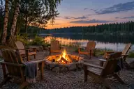
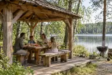
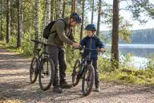
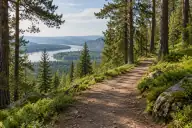
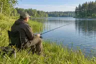
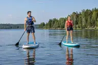
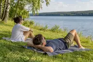
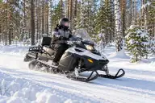
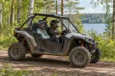
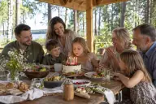

Для детей доступны контактный зоопарк, детские игровые зоны и развивающие игры на внимание, память и логику. Занятия можно чередовать с прогулками и совместными играми на свежем воздухе.

Костровая зона
Костровая зона на берегу подходит для семейных вечеров, встреч с друзьями и отдыха у огня после прогулок. Здесь можно собраться компанией, пообщаться и поделиться впечатлениями дня.

Беседки и мангалы
Для отдыха компанией на территории есть мангалы для приготовления еды на открытом воздухе и беседки для пикников и встреч с друзьями. Здесь можно совместить семейный обед или ужин с прогулками и общением.

Прокат инвентаря
Для прогулок и активного отдыха доступны взрослые и детские велосипеды в аренду, теннисные столы с инвентарём для игры, мячи и спортивный инвентарь. Выбирайте велопрогулку, партию в настольный теннис или совместную игру на свежем воздухе.

Пешие и велосипедные тропы
По территории можно гулять пешком по тропинкам и кататься по велотропам. По пути можно сделать остановки для отдыха, фотографий и знакомства с природой.

Рыбалка
Рыбалка у воды доступна в любое время года — весной, летом, осенью и зимой. Её можно совместить с прогулкой по берегу, отдыхом на природе и семейной поездкой за город.

SUP-прогулки
Летом у воды доступны SUP-прогулки: катание на доске, тренировка равновесия и знакомство с берегом с воды. Прогулку можно включить в день отдыха вместе с семьёй или друзьями.

Места для загара
У воды предусмотрены места для загара, чтения и отдыха на солнце. Летом здесь можно сделать перерыв между прогулками, катанием на SUP и другими занятиями на территории.
Каток
На открытом катке можно кататься на коньках всей семьёй, учиться держать равновесие и устраивать дружеские заезды. Катание удобно совместить с зимней прогулкой, играми на снегу и отдыхом после активного дня.

Снегоходы
Поездки на снегоходах проходят по заснеженным маршрутам среди леса. Можно отправиться на прогулку за новыми впечатлениями, увидеть зимние пейзажи и сделать остановки для фотографий. Формат выезда и маршрут подбираются с учётом погоды и состояния снега.
Ватрушки
Катание на ватрушках — зимнее развлечение для детей и взрослых: спуски с горки, игры на снегу и совместный отдых на свежем воздухе. Перед катанием можно уточнить подходящую горку и условия проката, а затем чередовать спуски с прогулками и отдыхом.

Багги
Поездки на багги подойдут любителям техники, движения и активного отдыха на природе. Доступный формат и возможность выезда зависят от погоды и текущих условий.

Павильоны для праздников
Павильоны на территории подходят для дней рождения, семейных праздников и встреч с друзьями. Здесь можно собрать гостей вместе, а сам праздник дополнить прогулками, играми и отдыхом на природе.
Прогулку по территории дополняют садовые парники и знакомство с растениями. Это повод обсудить с детьми сезонные изменения в саду, условия выращивания и роль укрытий для растений.
Занятия на открытом воздухе и доступность инвентаря зависят от погоды.
Красноярск и окрестности
Места в регионе
Исторические места, музеи и природные маршруты для самостоятельных поездок.
Лесные маршруты к скалам и смотровым площадкам национального парка. На карте отмечен Центральный вход; отсюда начинается подъём по Лалетинской дороге. Выбирайте маршрут и вход по официальной схеме парка, с учётом погоды и своей подготовки.